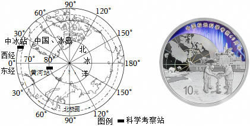
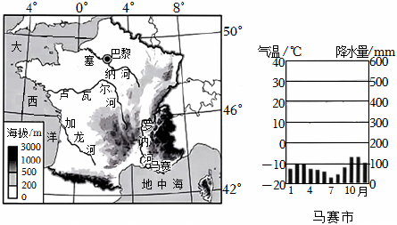

2025年北京市石景山区中考地理试卷 · 选择题 第16、17、18、19、20题
2024年是中国极地科考40周年。在我国发行的极地科考纪念币上，呈现有北极熊、极光、雪龙号科考船、冰芯取样等场景。如图为我国北极科考站位置示意图和极地科考纪念币图案。读图，完成第16～18题。

16．由中国和冰岛共同筹建的中﹣冰站的经纬度位置最接近（ ）
A．65.7°S，17.4°WB．65.7°N，17.4°W
C．65.7°N，17.4°ED．65.7°S，17.4°E
17．黄河站位于中—冰站的（ ）
A．东北方向B．西北方向C．西南方向D．东南方向
18．北极科考主要关注的是（ ）
①气象监测
②旅游资源的开发
③冰川考察
④生物多样性保护
A．①②③B．①②④C．①③④D．②③④
如图为法国地形图及马赛市气温曲线和降水量柱状图。读图，完成第19、20题。

19．法国（ ）
A．位于欧洲西部，大西洋西岸
B．北极圈穿过，处高纬地区
C．地势大致为东南高，西北低
D．罗讷河是该国最长的河流
20．马赛位于法国南部，是法国葡萄主要种植区，马赛盛产葡萄的有利自然条件是（ ）
A．全年温和湿润B．夏季光热充足
C．气候雨热同期D．人力资源丰富